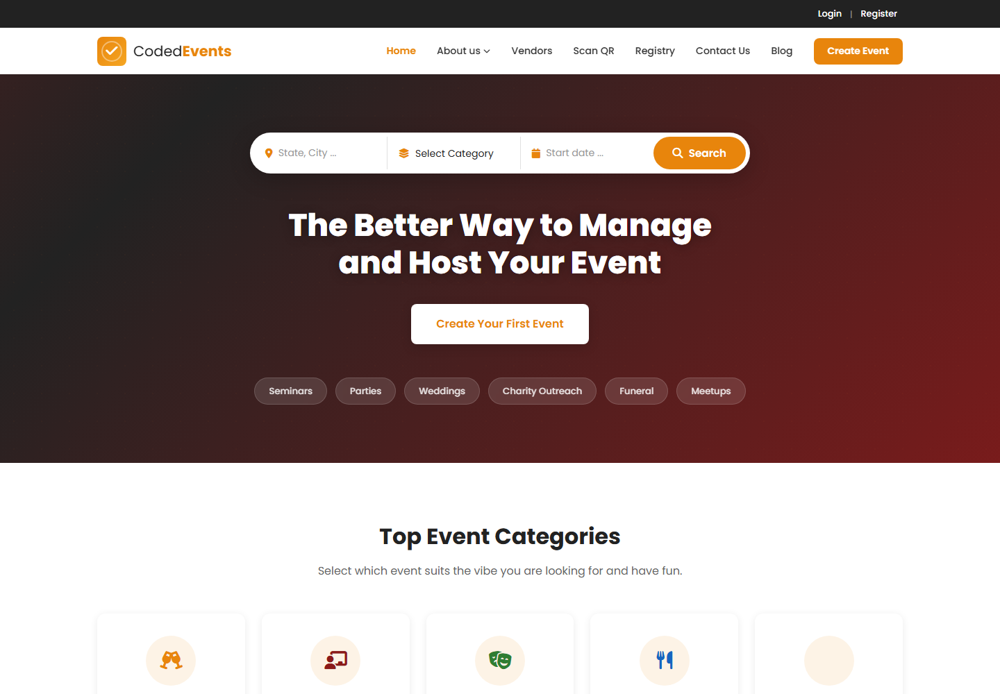

Check-in workflow
Prioritized validation and check-in actions for fast use during live events.
06 / Frontend case note · Event operations
Event tooling shaped around setup, access, validation, check-in, and the operational view needed when an event is live.

An event product has to work before, during, and after an event. The frontend challenge is to make setup, permissioned actions, attendee validation, and reporting easy to scan under time pressure.
Prioritized validation and check-in actions for fast use during live events.
Made role-based areas and allowed actions apparent to organizers and staff.
Kept setup, operations, revenue, and reporting visually consistent across event stages.